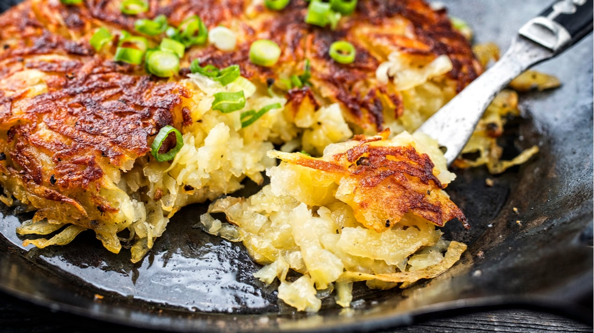
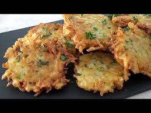

Tortillas a Través del Mundo
Aunque la tortilla es un plato genuinamente español, encontramos platos similares en diferentes culturas:
Frittata (Italia)
Hecha con huevos, queso y verduras o carnes. Se puede servir caliente o fría.
Rösti (Suiza)
Torta crujiente de patatas ralladas fritas en mantequilla, con cebolla, queso o tocino.
Kuku Sabzi (Persia)

Tortilla de hierbas, huevos y a veces patatas. Muy aromática y llena de sabor.
Kartoffelpuffer (Alemania)
Panqueque de patata rallada con cebolla y harina. Se sirve con salsa de manzana.